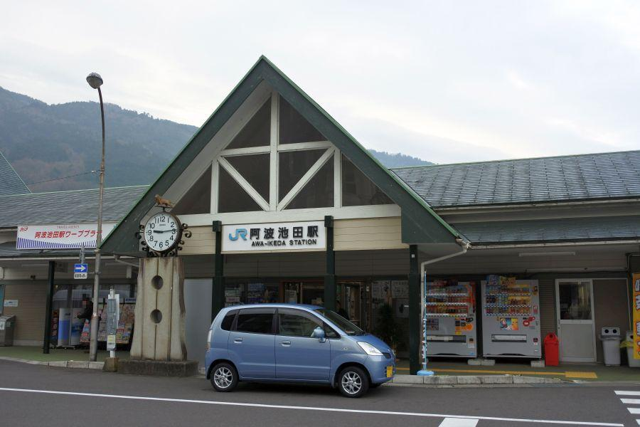
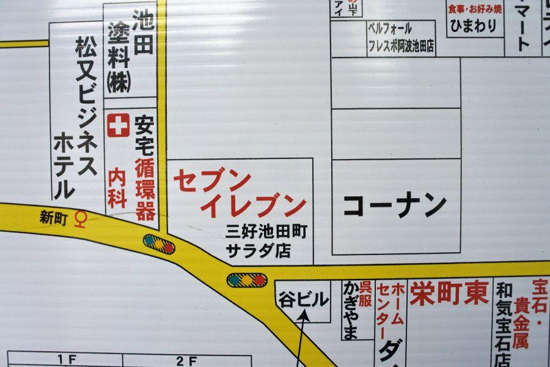
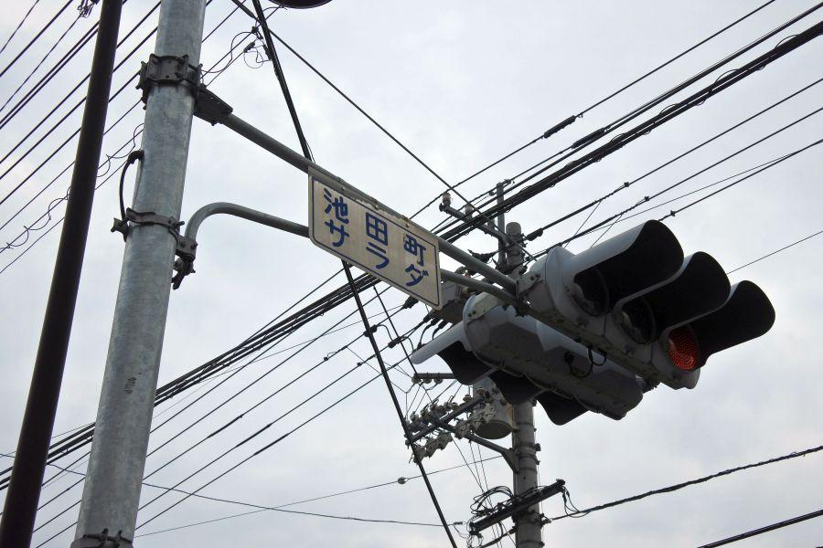
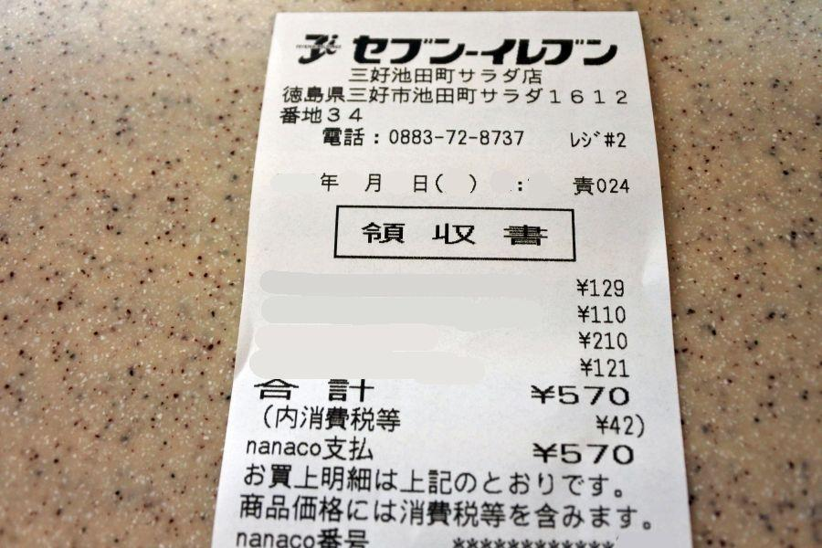
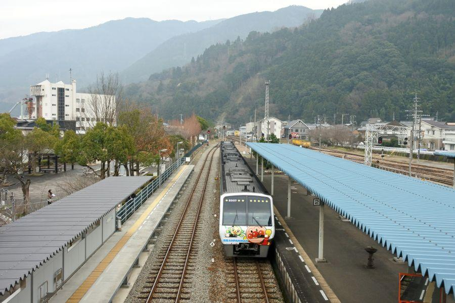
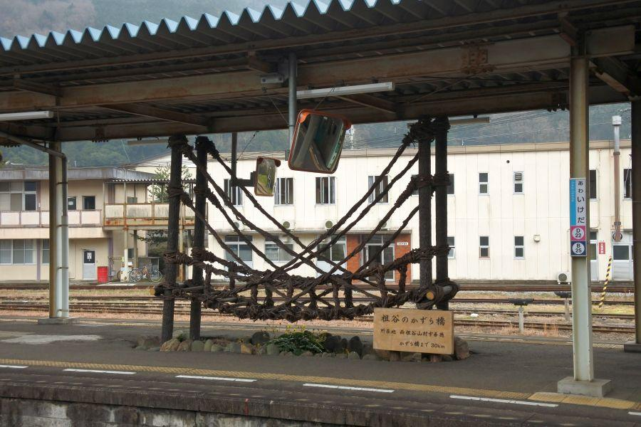

やまびこ打線で一世を風靡した高校がある街の珍地名 < 阿波池田駅 / 徳島県 >

徳島県西部の拠点であり、"四国のへそ" とも呼ばれる三好市池田町。
"あわいけだ" と言った方が、ある一定年齢以上の方、特に高校野球ファンの方々には通りが良いでしょうか。
"さわやかイレブン"
"やまびこ打線"
と呼ばれ、1970・1980年代の高校野球界を大いに沸かせた、徳島県立池田高校がある街です。
住所サラダ

その駅があるところ、地名に注目
「サラダ」
街の中心、阿波池田駅がある辺りの住所が "サラダ" なんです。
阿波池田駅の所在地→ 徳島県三好市池田町字サラダ1840番地
"サラダ" は住居表示における小字(こあざ)に当たる部分。
池田町は四国の中心に位置し、古くから各県へ向かう交通の要衝であることから 明治以降一層賑わい人口が増えたため、区画整理を行われた。
その際に取り入れられたのが、先進感を感じる表記方法である「片仮名」
多くの人々にとって 読み書きが容易な側面があったが、結局 他地域で定着することはなかった。
現在、三好市内でも旧池田町の町域のみで片仮名字名を見ることができる。
サラダの由来

阿波池田駅から歩いてくることができる場所にあるコンビニ。店名には "サラダ" がつく。

交差点には "池田町サラダ"
フォント(字体)を見るに、市町村合併前の三好郡池田町時代のものがそのまま使われています。

レシートにはもちろんサラダが入る。
サラダは元々は "更田" と書いたらしい。新しいことを "サラ" と言ったりしますが、それと同義。新田(しんでん)と同じ意味です。
交通の要衝・阿波池田駅

阿波池田駅に特急南風が入線してきました。一日に数便運転される、アンパンマン列車です。

こちらは県内を横断する特急剣山
水色と白のマスクに、銀色の車体。国鉄末期に四国向けに製造され、JR四国発足当時のエース車両だったキハ185系型で運行されています。
昨年運行が開始された "四国まんなか千年ものがたり" は同系車両。
他では JR九州で運行中の "A列車でいこう" "九州横断特急" は、JR四国から転籍組。それぞれ改造が施されて 現役運行中です。

駅のプラットホームに置かれたかずら橋
阿波池田駅は祖谷(いや)観光の玄関口。木の蔓(つる)で編まれた吊り橋・かずら橋等が有名。
交通機関を利用の場合、当駅や大歩危駅でバスに乗り換え 山奥の秘境を目指します。
阿波池田駅の場所
< 自家用車 >
高松駅から 約1時間30分、58km
高松空港から 約1時間10分、48km
徳島阿波おどり空港から 約1時間20分、87km
< JR >
JR高松駅から 1時間7分
JR徳島駅から 1時間11分
※ 主な地点からの最速・最短距離
関連記事
2017,10/23 手作り田舎そばを食べに、そばやへ < そばや / 徳島県 >
2017,11/26 四国の鉄道が繋がった瞬間を見届けた立会人 < 土讃線三縄駅 / 徳島県 >